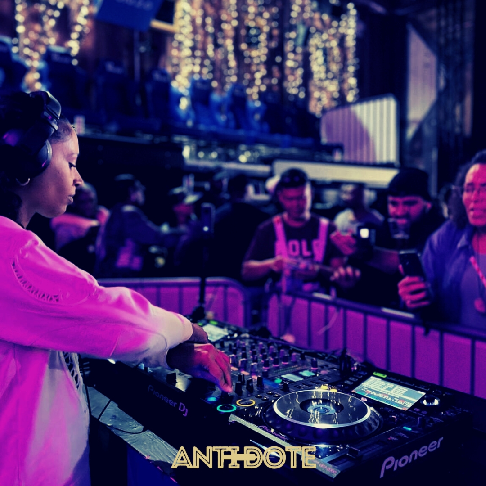
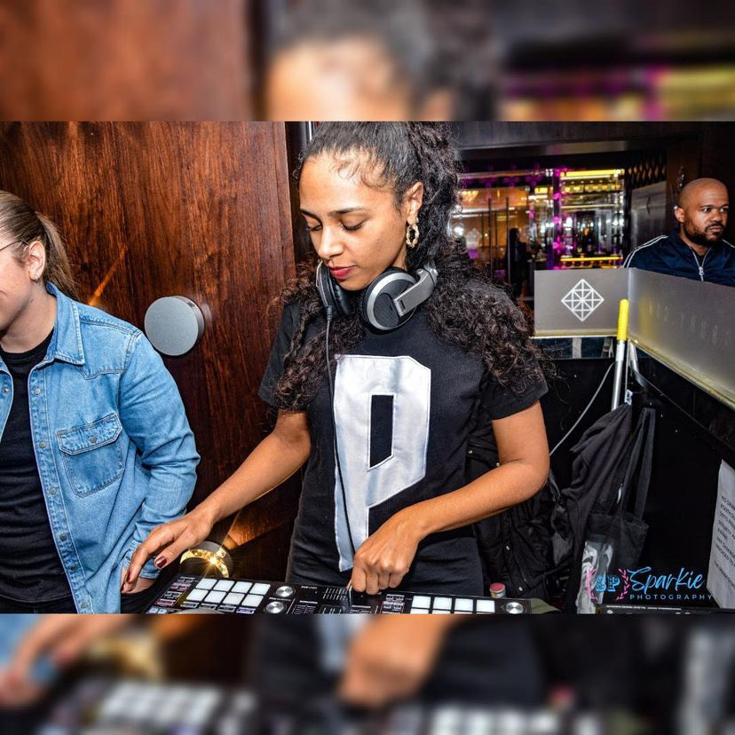
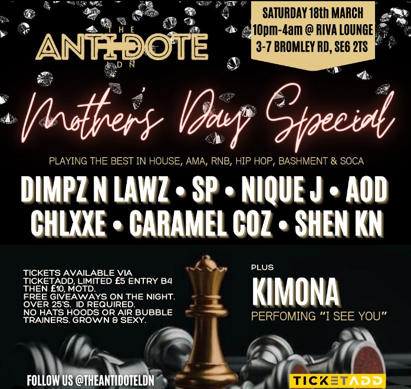

DJ SP - "You're listening to music that's from the community"

SP is a hardworking and perceptive DJ in London’s underground house music ecosystem. In a few short years, she’s gone from impromptu Instagram livestreams with her DJ controller to consistent bookings across amapiano, funky and Afro house events, as well as running her own club night – Antidote – at various venues around south London.
Although that trajectory might sound sudden or unexpected, SP’s rise illustrates how participation in a scene, both on the dancefloor and avidly listening to mixes, is the best way to build essential DJing skills before even touching the decks. She’s been on the ground in south London house music culture since the early days of UK funky in the late 2000s – a regular at the Brixton raves that launched the sound. Since the influence of amapiano and Afro house sparked new leaps forward in London’s house events, DJ SP has been taking all of these in too, appreciating their differences and paying attention to the details.
DJ SP has a true community mindset, with a solid grasp on the sociopolitical and cultural contexts of the music she’s involved in, particularly the impacts of gentrification and regressive attitudes. She’s a strong advocate for other DJs and underrated artists, particularly women coming into music scenes in the London underground that have up until recently been dominated by men. DJ SP speaks on much of this with a no-nonsense directness, but also with a wry smile and a sense of humour. You can hear all of this running through her mixes, which blend, loop and chop lightheartedly between fresh dubs from upcoming producers, serious London anthems, and gems from South Africa’s amapiano originators.
NKC: What’s your musical background?
SP: My dad was very much into jungle and drum ‘n bass when I was younger, whereas my mum was more into reggae, funk, rare groove, soul – a lot of ‘80s music. That’s my musical background as a child.
I found what I loved in my early teenage years, which was hip hop and rap. When I first started mixing, it was with hip hop and easy tunes like ‘Hip Hop Hooray,’ Fugees tunes, a bit of Mobb Deep; it was all on vinyl.
I used to have a jungle CD mixed by Shy FX. The mixing on that just completely amazed me. I’d be listening to that on my CD player on the way to school in year eight or year nine, so I would have been 12 or 13. That’s when I really started to pick up how the mixes were put together, and how two tracks were mixed together. I used to be on the bus, with headphones on, pretending it was me doing it. I know that album off by heart: every little mix, I’ve got it down to a tee. I liked it because it was more fast paced. That was my introduction to mixing that kind of music instead of hip hop.
When I first started getting into funky house, I lived in west London. I felt like a lot of house music was coming out of south London, where I used to hang around. I would usually hang out in Brixton and Streatham. There were places in Brixton like Fridge Bar, and Mass, which was a big church where they used to hold events – I’m not sure how! Underneath there, there was a place called Babalou, and in central Brixton there was Tongue and Groove. That’s where I would hear funky house. I don’t remember hearing anything going on in west London that was pushing funky house like DJs in south were.
Fridge Bar used to hold a night on Sundays and there would be DJs like Scholar Tee and Jay Jay. That’s when I first started to hear about DJ Pioneer as well, before he got really big. Fridge Bar was so nice, because you go in and it’s quite narrow, you’ve got a bar upstairs, and then you go down into this dungeon and the ceiling is quite low. The sound and the atmosphere… it was very grimey. It was a small venue, but it was always packed every Sunday.
For me personally, when I really started to appreciate funky house, I would hear songs that were playing in other environments and think they sounded like funky house, and then when I heard them out at Fridge Bar and other nights, that would confirm it. My mum listens to Omar a lot, and when he released ‘It’s So’ she started playing that, and then I started hearing that when I was going out.
NKC: When you say DJs were playing funky house at Fridge Bar, did they also play UK funky as well? Because some people would say there’s a difference in that UK funky was grimier and harder?
SP: It was a mix, but places like that gave people who came along the inspiration to start making that kind of music and to put their own spin on it.
Fridge Bar has closed down now, unfortunately, as have a lot of the places in Brixton that were regular spots for funky. It’s a shame because it was a really good spot. There was occasional trouble outside, but nothing out of the ordinary. During the time it got shut down is when a lot of the gentrification of Brixton started to happen. I feel like they always had that in their mind – that it couldn’t be there anymore. Brixton is very different now to how it was when I first started going out around there.
NKC: Do you think it would be difficult to have something like the funky scene now, because there wouldn’t be enough venues ready to accommodate it?
SP: Most of the time it’s the venues being wary of the crowds it might bring. What I heard from promoters was that they were trying to find venues to put things on, but the club owners didn’t want those kinds of crowds there. Even though house music and that crowd isn’t a rowdy crowd. People usually listen to house for the love of music and everyone just wants to free up themselves and dance.
It’s a bit more accepted by club owners now. I think there was a long period of time when promoters were really struggling to get venues to hold their events, but I think it’s balancing out more. The club owners are seeing the crowd that the events are pulling in, and people who started listening to funky house back in the day are a bit older now. It’s more of a mature vibe and people are a bit more relaxed.

NKC: Were you into deep and tech house, the shuffling scene?
SP: At that time I fell pregnant with my second son, so I was off the scene for a bit. But when I did start going out again, the sound was more deep house, a lot more tech house, there were all these shufflers everywhere, I was like, what’s going on?!
NKC: It must have been a different world from funky!
SP: Yeah, and that must have been in two or three years, that change happened. I’m not sure whether that’s also down to the type of crowds that tech house brings in. Maybe club promoters felt more comfortable with those nights – there was a lot of stuff going on in Vauxhall, at Fire, Lightbox, and Number 65. Maybe because the crowd was a bit more mixed, it was easier for them to put on those nights.
Deep house and tech house – it’s a different kind of vibe. I don’t just want to say drug-users… but I don’t know how to say it!
NKC: There was a lot of NOS balloons and MDMA around shuffling...
SP: With the deep tech sound, they seemed to do a lot of big events. At that time there weren’t a lot of funky house or UK house raves, it was just deep tech from 2012 to 2015/16. For a few years that was the main house sound. I like tech house, I’ve done a couple of sets that are techy vibes, but it’s a lot of the older tech music, it’s not something that I follow now.
NKC: What got you started out with DJing?
SP: I got my DJ controller for fun at the start of lockdown. Obviously, people were stuck at home, I had extra money, and I thought ‘why not?’ Prior to that I had been playing around a little bit on people’s controllers, but my last proper experience with mixing was when I was doing vinyl and that was when I was much much younger.
A friend of mine invited me to meet DanDizzle – he said ‘come along, she’s got a live stream for International Women’s Day.’ That was my first invite to go and play somewhere. I recorded that set and uploaded it, and I got really good feedback from it. Then DanDizzle invited me back again to do a b2b with just me and her, and from there we got booked for another live stream, and another, and another. Then we got our first outdoor booking as a back to back set, and it took off from there. Because I was going out, I knew quite a few people who DJed already and they were helpful with advice and sending music, because I didn’t have a huge collection of music.
I feel like lockdown gave a lot of people, including myself, the opportunity to explore DJing, whereas before they might not have had the time because of work and other commitments. It’s been nice to meet a small group of DJs who have all started at the same time, and we’re all coming up together. It’s nice watching everyone’s journey.
I would say a quarter, maybe a half, got their controller for actually pursuing a career in DJing. The rest of us were doing it for fun. I felt like that brought a different element to it. The big DJs who were out before lockdown, they done a couple of live streams, but there wasn’t that many compared to people who had just started out, who were consistently doing one every week.
People who had been DJing before, they had probably been used to getting paid for DJing – that’s their job. Whereas us who had started out during lockdown, we were doing it just for fun, which brought a different element and vibe to it. We weren’t doing it to get loads of numbers.
NKC: How do you approach DJing and playing out?
SP: I try to get to venues a bit early if I’m going to play there, to see what the DJs before me are playing. I look at the crowd and see their reaction to it. I work out from there what I’m going to play.
NKC: Since the pandemic restrictions ended, I think there have been more women who have learned to DJ during lockdown who have now started playing out, have you found that as well?
SP: When I was going out, before I was DJing, the top two female DJs were Angie B and Cooly G. Those were the only two that I knew of. Once I started going out to more deep house and tech house, there was maybe one or two that were doing tech house, but not a lot.
I feel like lockdown gave women that opportunity to learn, and doing the live streams gave female DJs the opportunity to showcase their talent. Prior to that, you either got booked or you didn’t. People weren’t using live streams for the purpose of DJing, until lockdown happened.
There are loads of up and coming female DJs and it’s great to see. It’s very much balancing out at the moment. I still see lineups where it’s all male DJs, but it’s balancing out a lot more.
NKC: Where do you get your music, do people send you a lot of tracks?
SP: Yeah, that was a surprise, when people started sending me their music! I follow producers on Instagram, I see when they’re putting new stuff out, I listen to what other DJs are playing as well. I use Bandcamp and Beatport, and they show you similar music, then I sit down and go through it. This was all new to me, because when I started DJing I didn’t think I had to take time to find new music, but it’s a big task on top of actually playing the music.
I try to find what I like, because I don’t always like to play what everyone else is playing. I wouldn’t play something just because I feel like everyone else likes it. When DJs are researching new music, that’s their opportunity to put their own spin on it.
NKC: Who are your favourite artists at the moment?
SP: My go-to producer at the moment is Mad One – his label is Devine UK. I really like his music because it captures the essence of UK house and funky house, but it’s more up to date, the way he puts it together. Growzie as well, he’s really good at putting vocals that are out at the moment over a beat. I like the way that his music meshes together.
Then of course, the houSupa label. What those guys have done, pushing their own music, has been really nice to see. It feels like an accomplishment for everyone – that these guys are releasing their own music, they’ve got a real label. Because they’re from the community, from the ends, people are able to relate a bit more. It’s nice to see people doing their own thing and progressing in it as well.
NKC: It feels like a label to draw it all together is what was missing from the funky days.
SP: Yeah, and people working together instead of everyone doing it individually. Mad One owns the Devine UK label, but then he’s got a lot of other DJs and producers around him. Housupa are doing the same thing. There are groups of people working together and that’s what’s making it work.

NKC: People are calling this scene Afro house – but it’s influenced by amapiano and funky house, it’s almost like UK funky round two. Do you think it’s now a coherent scene with a specific sound?
SP: If I go out to an Afro house event or an amapiano event, the vibe reminds me of the early days of going out to UK funky. It’s quite cultural as well, especially with the amapiano influence. Not all DJs that play Afro house will play amapiano though – I know people who play Afro house who say they hate amapiano, even though they’re very similar!
I feel like there’s a cultural thing and a generational thing going on. For the older ravers it’s what’s most similar to what we first started listening to, with UK funky, until it went quite techy. It’s come back around full circle, but this time with the influence of amapiano and a lot more UK producers.
NKC: What are the key nights in the scene?
SP: Definitely Awoken, that’s my top one. They have a really nice set up there – the venue, the lights, the sound. Then you have nights like Ambience – that’s a fairly new night, I think they’ve had three events so far. That’s a really good one. I played for the first Decibel, which was packed.
NKC: What made the vibe so good at Decibel?
SP: DJ Flawless runs it. He took time out to make sure that the sound was perfect – he brought in extra speakers. That’s key for me, how the sound is in the venue. Location as well, a lot of these events have been happening in south or east London.
If you feel like you’re in your community and you’re listening to music that’s from the community, that adds to the vibe as well. For the sounds that I like and the vibe I like, it would have to be a south London rave.
NKC: You mentioned Dankie Sounds to me before – it looks like a slightly different vibe to some of the other nights we’ve talked about – how would you describe Dankie Sounds and how does that fit in with this scene?
SP: Dankie is a different vibe, definitely. I would say it’s a lot more cultural. You might hear one or two Afro house tracks, but it’s mainly amapiano. Obviously, that music’s from South Africa, so you get a lot of people coming and feeling like they can immerse themselves in that culture in a fun way. A lot of people dress differently for Dankie Sounds – people are wearing what you might not wear in a proper south London rave. It’s a lot more colourful, vibrant, people are very free and expressive. People come with good energy and good vibes.
NKC: Is it a slightly younger crowd?
SP: Yeah, maybe the next generation coming up, listening to these kinds of sounds, are freer to include their culture in it. They’re more comfortable putting their stamp on it, saying this is our sound and this is how we’re going to do it. The younger generation are a lot more, I don’t want to say they’re more proud of where they’re from, but… I don’t know how to word it.
NKC: There seems to be more African empowerment locked in with the appreciation of amapiano, and there’s been more of a cultural move towards it...
SP: Yeah, exactly. People are embracing it a lot more, and not just people who are from that culture, everyone is embracing everyone’s differences and their cultures.
NKC: Do you think these scenes will ever match up to the size of some of the deep tech raves – like Audiowhore, Siesta, House of Silk? Or do you think it’s limited because it’s more of a specific sound?
SP: I’d say it’s a bit more limited. When I’ve been to House of Silk I find that to be more of a younger crowd. Maybe at a younger age, you have more of an opportunity to go out, whereas when you start getting older you have to limit it a bit more. I’m not sure raving-wise whether it could be as big. I think the events I’ve been to have never gone past the 700 capacity mark.
Saying that, Dankie Sounds has just gone off like a rocket over the last year. They’ve got an event coming up soon and that venue is huge. But Dankie is more of a younger crowd as well. I think it depends on your target audience – how old they are, and whether they can manage coming out every week or not!
NKC: With some events, you get the same names on the lineups, and they’re mostly men. Do you think some of the newer nights are changing that?
SP: People who are starting to put on events now, they’re putting on their friends who have just started DJing, or people they know who have just started DJing, and then including one big name – like DJ Pioneer alongside these up and coming DJs. It gives people a bit more of a chance to get out there and play their music.
But some nights are still just keeping all the heavy hitters on there. It’s great, but I think people are starting to get a bit bored. They’re now appreciating that there are other DJs who have different styles. I think the crowd has also started to ask for more variety of DJs. It keeps it fresh, people have different styles of playing, and it’s nice to see different faces up there.
NKC: Is there anything you think would make the scene better?
SP: I would like to see more variety on lineups and definitely more women on lineups as well. There’s a few house DJs – I won’t say names – who do podcasts, and one of them was talking about females up and coming in the DJ world. It was three males, and they was discussing when they book a female, like what kind of order do you book them for? Is it for looks, talent, or the crowd they bring? The fact that looks was on there – I was just like, what?!
When I was listening to it, I couldn’t believe it. I’m sure no one books a male DJ based on how they look, so it really threw me off that that was even in the category of how they choose a female DJ.
One thing I would like to see is more females being able to hold the mic – more mic women, please! There have been a lot of female DJs up and coming, but we have a lot of men hosting us still. So it’d be nice to have more females coming through in that capacity as well. Not to say it has to be a whole female takeover, but I just think it brings a bit of balance.

NKC: You recently started your night Antidote, how has that been going?
SP: The first two that we done, they were both free events at Pop Brixton. It’s always a good time in there. The space itself has been really helpful with putting the sound out there. People are able to come down and listen to new music.
It’s very casual – come as you are, hold a vibe. It’s open during the day as well, so sometimes you get people who have come in after work, or there are people who are specifically coming down for that event. So you get a nice mixture of people.
I didn’t advertise it as an all-female lineup, even though that’s what it is. I just feel like, we’re DJs in our own right and we don’t have to be saying ‘all-female’ and ‘women power’ and all that stuff. So I just thought of a name for it and put some people on that I’ve come up with DJing, and other DJs that inspire me.
NKC: What’s the music policy, are you trying to push a specific sound or do you try to put on a mix of genres?
SP: I would just have to say ‘house,’ I wouldn’t put it into any subgenre. I actually just base it off what I listen to, selfishly. But I feel like my generation has grown up with the UK funky scene, and as we’ve started DJing there’s been the growth of amapiano, and there’s been a change in the style of the music being made by producers in the UK. It’s not just funky anymore, it’s blended. I’d like to bring everyone together.
NKC: Where does the name for your night come from?
SP: Music is meant to be healing, it’s meant to be medicinal, so I thought – Antidote.